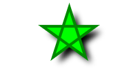
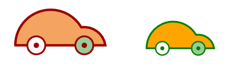

Let's start with a quick tour of g2.core's features and look at it by short examples.
For a more thorough explanation please make use of the sidebar.
Paths #
Path definitions are similar to canvas notation while using short SVG syntax. Note the simplicity of arc declarations.
<canvas id="c" width="200" height="200"></canvas>
<script src="g2.core.js"></script>
<script>
const ctx = document.getElementById("c").getContext("2d"),
pi = Math.PI,
style = {fs:"#690",ls:"#050",lw:8,lj:"round"};
let umbrella = g2();
umbrella.p() // make stick
.m({x:100,y:10}) // top of shaft
.l({x:100,y:150}) // shaft
.a({dw:-pi,x:130,y:150}) // handle
.stroke(style) // style stick.
.p() // make covering
.m({x:10,y:80}) // leftmost point
.a({dw:pi/3,x:70,y:80}) // three ...
.a({dw:pi/3,x:130,y:80}) // ... small ...
.a({dw:pi/3,x:190,y:80}) // ... arcs
.a({dw:-2*pi/3,x:10,y:80}) // big arc back to leftmost point.
.z() // close gap
.drw(style) // style covering.
.exe(ctx); // draw to canvas
</script>

Read more about how paths are used here.
Elements #
Two consecutive commands cir-txt are building the command queue. Then these commands are executed
addressing a particular canvas context.
<canvas id="c" width="100" height="100"></canvas>
<script src="g2.core.js"></script>
<script>
ctx = document.getElementById("c").getContext("2d");
g2().cir({x:50,y:50,r:40,fs:"moccasin",ls:"maroon",lw:3})
.txt({str:"Hello",x:50,y:55,w:0,thal:"center",font:"24px serif",ls:"maroon"})
.exe(ctx);
</script>

Read more about how elements are used here.
View transformation #
Once built, a graphics command queue can be used to address multiple renderers. Renderer instances can also be placed on top of each other. So g2 supports a cheap layering technique. Please note the ability to use SVG path strings.
<canvas id="c1" width="200" height="100"></canvas>
<canvas id="c2" width="200" height="100"></canvas>
<script src='./g2.core.js'></script>
<script>
const star = "M100,10L123.5,82.4L61,37.6L138,37.6L76.5,82.4Z",
ctx1 = document.getElementById("c1").getContext("2d"),
ctx2 = document.getElementById("c2").getContext("2d"),
vw = {x:0,y:0,scl:1},
g = g2().view(vw).drw({d:star,lw:4,ls:"#080",fs:"#0f0",sh:[8,8,8,"black"]});
g.exe(ctx1);
vw.x = -225; vw.y = -50; vw.scl = 2.5;
g.exe(ctx2);
</script>

Read more about how the view is transformed here.
Grouping and Reuse #
It is easy to reuse predefined geometry by defining multiple g2 objects. Styles can be inherited by g2 children from their parents.
<canvas id="c" width="400" height="120"></canvas>
<script src="g2.core.js"></script>
<script>
const ctx = document.getElementById("c").getContext("2d"),
pi = Math.PI,
wheel = g2().cir({x:0,y:0,r:15})
.cir({x:0,y:0,r:3,fs:"@ls"}),
car = g2().p()
.m({x:-75,y:20})
.a({dw:-5*pi/6,x:35,y:50})
.a({dw:-pi/2,x:75,y:20})
.z()
.drw()
.use({grp:wheel,x:-40,y:20,fs:"snow",lw:3})
.use({grp:wheel,x: 40,y:20,fs:"#9c9",lw:3});
g2().view({cartesian:true})
.use({grp:car,x:100,y:25,ls:"#900",fs:"#f4a460",lw:4})
.use({grp:car,x:300,y:25,scl:0.75,ls:"green",fs:"orange",lw:4})
.exe(ctx);
</script>

Read more about how reuse is used here.
Insert #
Read more about how ins is used here.
Animation #
Read more about how animations are used here.
Interactivity #
Read more about interactive rendering here.
Extensions #
Read more about g2's extensions here:
Arrow notation #
g2 commands don't have to be declared with static parameters.
They can be changed at 'run time' and display changes in the next rendering via exe().
<canvas id="c"></canvas>
<script src="./g2.core.js"></script>
<script>
const ctx = document.getElementById("c").getContext("2d");
let radius = 10, color = "rgb(0,255,0)", x = 10,
g = g2().cir({x:()=>x, y:75,r:()=>radius,fs:()=>color});
g.exe(ctx);
while(x<=250) {
x+=radius;
radius+=1;
color="rgb("+x+","+(255-x)+",0)";
g.exe(ctx);
}
</script>

Note that the command queue is not altered after its initial definition.